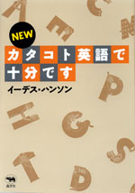

|

|
英会話 |
||
| NEW カタコト英語で十分です | |||
| イーデス・ハンソン | |||
|
A5 判並製 176頁 |
|||
| 定価1470円（本体1400円） | |||
| ISBN4- 7949− 6498-6 C0082 | |||
| ペラペラ話す必要なんてない。身ぶり手ぶりを総動員してカタコトで十分。学校にも教本にもたよらず、流暢な日本語を話せるようになったハンソンさん。自らの日本語マスター経験をもとにイーデス流会話上達術を大公開。買物、電話、デートの会話。道の聞き方・教え方。あいづちや間のとり方。英語が苦手なアナタにおすすめ、必ず役に立つ最初歩英会話入門。 |